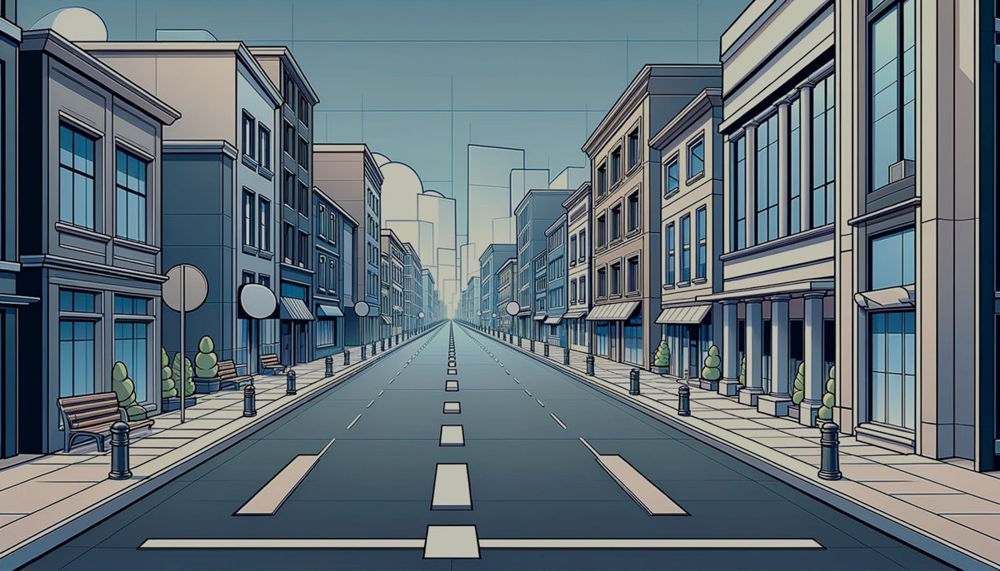
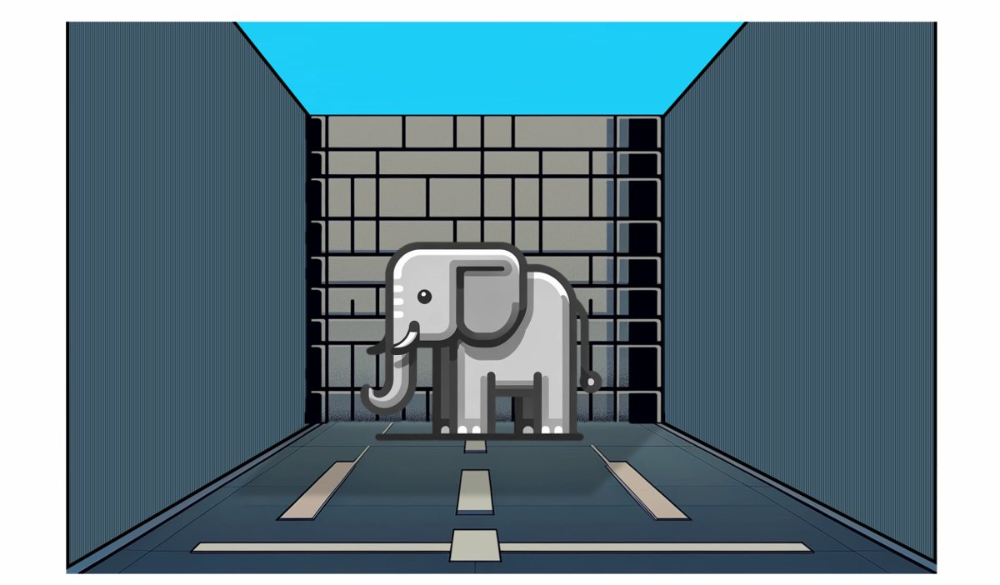
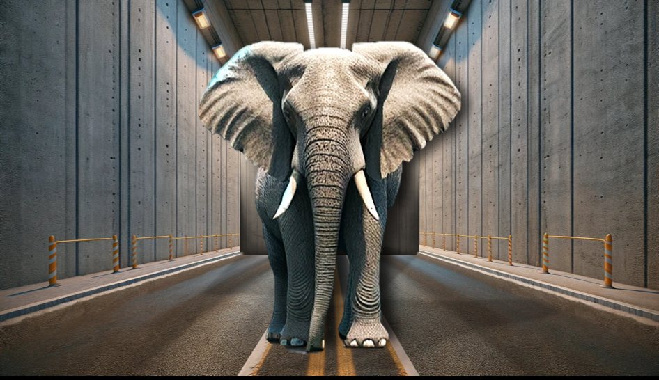
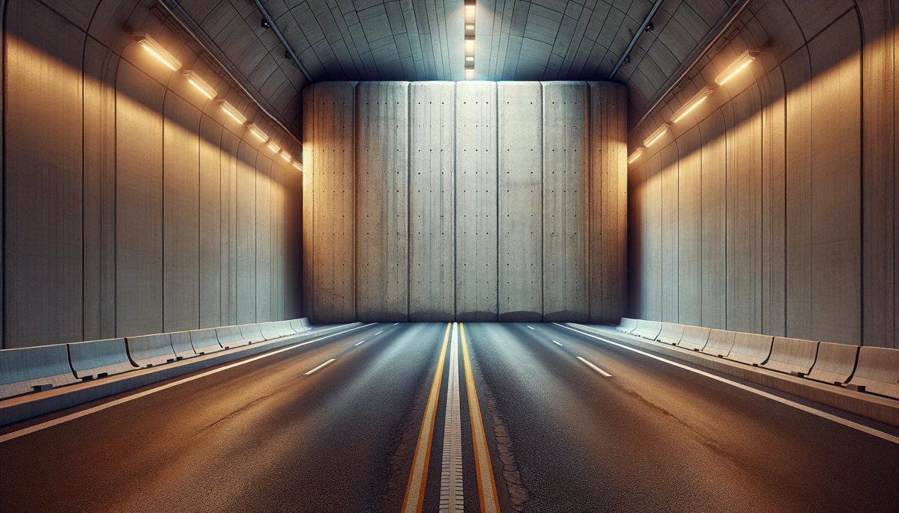

Research note
Why the same change feels bigger to some people
Put a wall behind an object, and the same distance can start to feel farther. It sounds backwards. It is the result I find most exciting in my research, and the story begins with an elephant.
An elephant moves away
Here is the task. You see an object — an elephant, or a car. Then you see the same object again, smaller, and you're told it has moved further away. How much farther does it seem to have gone?
Everyone sees exactly the same shrink. And yet people answer very differently. For some, the elephant has barely moved. For others, it has gone a long way.
You could write that off as noise. I couldn't. The same physical change, reliably feeling different sizes to different people, is a strange thing when you stop to look at it. It means the change isn't being read off the world directly. It is being measured against something inside the person.
The idea that made it click
The piece that made it click came from an old idea in pricing research. A ten-dollar difference is enormous between two sandwiches and trivial between two laptops. People don't judge a price against an absolute ruler; they judge it against the range of prices they expect (Janiszewski & Lichtenstein, 1999). The same ten dollars fills a narrow range and barely registers in a wide one.
So what if space works the same way? What if each of us, at any given moment, is carrying a range — a sense of how big the relevant space is — and every change gets measured against it?
Shrink the range and the same change becomes a bigger fraction of it. I call the resulting signal spatial sensitivity. On this account, the people for whom the elephant went a long way aren't mistaken. They're using a smaller ruler.
The range doesn't have to be a literal box in the head. It is assembled on the fly — from what you can see, what you're paying attention to, what you remember. Some of it may belong to the person. Some of it clearly doesn't, and that is where it gets interesting.
Then put up a wall
If the range comes partly from what you can see, then you should be able to change it by changing the scene. And if you can change it, the theory makes a prediction that sounds wrong.
Close the space off — put a wall right behind the object — and you shrink the range the eye has to work with. The same distance now takes up more of the room. So the enclosed scene should make things feel farther, not closer.




That runs against the usual intuition. A tight, enclosed scene is supposed to feel intimate and near. A simple proximity account says the bounded room should pull things closer. The range account says it should push them away. The two ideas point in opposite directions, which is exactly what you want: the data would have to pick one.
The wall moves the ruler
The most direct test is the simplest. People saw either the open scene or the scene with the wall behind the elephant, and then did the measure: how much farther did the object seem to move?
t(265) = 7.89, p < .001 · N = 267 participants who passed attention checks
Same objects, same shrink. Put a wall behind the scene, and the move felt substantially bigger. The prediction that sounded wrong came out, and not by a little.
The same study held a second, quieter surprise. People who had just seen the walled scene also rated themselves as slightly more sensitive to sensory input on a standard questionnaire (the Highly Sensitive Person scale): 4.38 versus 4.19, t(265) = 1.98, p = .048. That one is small and exploratory, and I hold it loosely. But a picture of a wall nudging how sensitive people feel is exactly the kind of thing a range account would expect.
Then an eclipse
If a wall can stretch a small move, can it stretch time? In another study, people saw a bounded or an open scene and then thought about a real future event — a solar eclipse. How far away did it feel? When would they buy glasses to watch it? Half of them were asked to actively judge distances in the scene; the other half just described it.
Among the people who actively used the scene as a ruler, those who saw the bounded scene planned to buy their eclipse glasses later, and rated the eclipse as farther off. The wall didn't pull the future closer. It pushed it away — the direction the range account predicts, and the opposite of the proximity story.
A wall in a picture changed how far away an eclipse felt. Not because anyone thought about walls — because the room had quietly become the ruler.
The effect depended on the task, and I find that almost more exciting than the direction. The scene mattered when people were actively using it to judge distance. That says something about how this works: the room around you shapes your judgments when it gets pulled into the comparison — not simply because it's there.
What else lines up
The wall and eclipse studies are two of five projects in this line of work. None is decisive on its own. Together, they keep pointing the same way:
- Load moves it too. Walls aren't the only way to shrink the ruler. Cognitive load did the same thing: people holding a long number in memory felt the same shrink as a bigger move. Fewer things to compare against, a smaller ruler.
- It may travel into time. In early, exploratory data, people with higher spatial sensitivity tended to feel a delayed reward was further off — the same logic, possibly showing up in a different kind of distance.
- It connects to how people experience their senses. In two samples, people with a more local, zoomed-in way of seeing scored higher on a self-report measure of sensory reactivity (the Highly Sensitive Person scale). With the elephant-and-car measure, the link showed up again (r = .22, p < .001). If your ruler is small, stimulation should feel bigger — not sharper, just bigger. Both measures are self-reports, so this is not evidence of sharper senses.
Once you see it
This is the part I can't stop thinking about. Almost every place people shop is a frame with walls. A narrow aisle. A phone screen. A shelf. The white space around a price tag. If the frame becomes the ruler, then what else is it quietly changing?
- Does a wait feel longer in a small store than in a big one?
- Does a discount look bigger when the page around it is tight?
- Does a deadline feel more urgent — or further off — depending on the screen it lives on?
- And does all of this hit some people much harder than others?
None of these has been tested yet. That last question is the one I care about most. Marketing usually treats context as something that nudges everyone a little in the same direction. A range means the same shelf might compress the world for one shopper and leave the next one untouched.
What I don't know yet
This is a framework with early evidence, not a finished theory. The questions that will decide whether it survives:
- Is spatial sensitivity a stable trait, or mostly a state that resets with the scene? So far I have consistency within a session, not across weeks.
- Could some of the links come from people who simply use rating scales more expansively? That needs objective magnitude tasks to rule out.
- Do the scenes change the underlying range, or only the measure? If only the measure, the differences between people may still be real while the walls are not the lever I hope they are.
If it holds up, it gives consumer research a new question to ask. Not just what changed, but how big it felt, to whom, and why.
Reference: Janiszewski, C., & Lichtenstein, D. R. (1999). A range theory account of price perception. Journal of Consumer Research, 25(4), 353–368.
← Back to writing